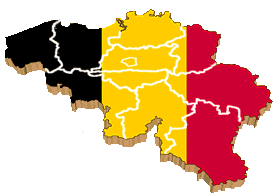

 Belgium (French: Belgique, German: Belgien), officially the Kingdom Belgium, is a Western European state bordered by the North Sea to the west, The Netherlands in the north, Germany in the east, Luxembourg in the southeast and France in the south.
Belgium is made up of three communities: the Dutch-speaking, the French-speaking and the German-speaking. Belgium is divided into three regions: Flemish, Walloon and German and the Brussels-Capital Region.
The capital is Brussels, which is also the capital of Flanders and the administrative centre of the European Union.
The name "Belgae" was first mentioned by Julius Caesar, but the state of Belgium didn't become independent from the Netherlands until 1830.